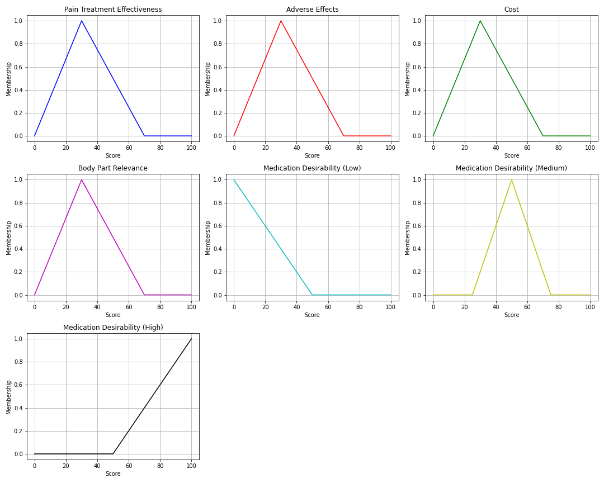

An expanded technical report, code appendix, and GitHub Pages project by Jordan Christopher Lyles on fuzzy inference, medication allocation, exclusion criteria, and explainable clinical decision support.
Our project aims to develop a personalized medication dosage adjustment system leveraging fuzzy logic principles. Medication dosage adjustment is a critical aspect of healthcare, influencing therapeutic outcomes and minimizing adverse effects. However, current methods often rely on fixed guidelines and may not adequately consider individual patient characteristics, leading to suboptimal outcomes and increased risk of medication errors.
Through this project, we designed a system that dynamically adapts medication recommendations based on patient-specific factors such as age, weight, gender, medical history, severity of symptoms, medication adverse-effect profile, cost, and potential drug interactions. By incorporating fuzzy logic principles, the prototype enables nuanced decision-making and represents the uncertainty and imprecision inherent in clinical data.
The system uses Python and the scikit-fuzzy library for rule-based inference and medication desirability scoring. The early proposal also considered a machine learning extension using injection plume images. In that extension, injection images from a public dataset would be annotated with time intervals between doses, preprocessed for feature extraction, and used to train a convolutional neural network (CNN) to recognize visual patterns associated with dosage timing. The CNN's prediction of dose timing or plume characteristics could then be passed into the fuzzy logic layer as another input variable.
The final class prototype focused on the interpretable fuzzy logic component: medication selection by patient concern, symptom location, medication properties, and preliminary safety exclusions. This makes the project easier to explain, audit, and improve because each determination can be traced back to a rule, a membership function, or an exclusion criterion.
Medication decisions must balance efficacy, safety, cost, accessibility, patient comorbidities, contraindications, and patient preference. Standardized dosing guidelines are necessary because they create consistent starting points, but they can miss the gray areas where patient-specific information matters. The same symptom score or diagnosis can have different implications depending on age, kidney function, liver function, prior adverse reactions, medication access, and the body region being treated.
Fixed categories simplify care but do not always capture biological variability, tolerance differences, organ function, medical history, medication interactions, or cost barriers.
Clinical inputs are often approximate: pain is subjective, adherence varies, adverse effects may be underreported, and medical history may be incomplete.
A highly effective medication may have a worse adverse-effect profile; a safer medication may be less effective; an ideal treatment may be expensive or inaccessible.
Clinical decision support must be explainable. A recommendation is more useful when the user can see why a medication was excluded or ranked highly.
| Theme | How it supports the project |
|---|---|
| Model-informed precision dosing | MIPD uses quantitative models and patient-specific characteristics to individualize drug exposure and response; this project is positioned as an educational prototype aligned with that broader precision-dosing idea. |
| Fuzzy logic in medicine | Fuzzy logic is useful when clinical categories are not perfectly binary because it can represent partial membership, uncertainty, and imprecision rather than forcing every input into yes/no rules. |
| Clinical safety boundary | A real clinical system would require regulatory-quality validation, expert review, contraindication checking, EHR integration, prospective testing, and human clinician oversight. |
Traditional Boolean logic treats statements as either true or false. Fuzzy logic allows partial truth. A medication can be somewhat affordable, very effective, moderately risky, or highly relevant to a patient's pain location. This matters because clinical variables rarely fall into perfectly clean boundaries. For example, a pain treatment score of 69 should not behave completely differently from a score of 70 simply because it crosses a cutoff.

Figure: membership functions for pain treatment effectiveness, adverse effects, cost, body-part relevance, and medication desirability.
The patient_profile.py script creates synthetic patient records. It randomizes age, BMI, gender, race, pain duration, pain severity, sleep, exercise, hydration, smoking, food frequency, and caffeine intake. These fields represent the type of patient-specific data that a future clinical decision-support system might use.
The NUCL570_final.py script defines medication properties, fuzzy variables, membership functions, fuzzy rules, patient profiles, body-part matching, desirability scoring, and ranked output.
The determinations are not clinical prescriptions. They are prototype rankings created from assigned medication feature scores. Each medication is represented by attributes such as ease of use, cost, accessibility, pain treatment score, adverse effects score, duration score, and affected body parts. The fuzzy system then converts these numeric values into qualitative categories such as poor, average, and good. The output is a desirability score that represents how well the medication fits the simulated patient scenario.
| Determination component | How it was used | Why it matters |
|---|---|---|
| Pain treatment effectiveness | Higher scores increase membership in the favorable effectiveness category. | The system prioritizes options expected to better address the symptom. |
| Adverse effects score | Better tolerability increases desirability; poor tolerability pushes toward lower desirability. | Medication usefulness depends on both benefit and risk. |
| Cost score | Higher affordability/cost-effectiveness improves desirability in the prototype. | A treatment that is inaccessible or expensive may not be practical for the patient. |
| Body-part relevance | Medications not matching the simulated pain location are flagged as not suitable. | A medication should be relevant to the patient concern, not simply high-scoring overall. |
| Exclusion criteria | Age ranges, disease flags, and safety warnings are stored as a separate table. | Before ranking, a real system would exclude unsafe choices and explain why. |
The medical exclusion criteria file adds a safety-filter layer. Instead of ranking every medication blindly, the project stores exclusion flags that represent conditions where a medication may be inappropriate for a simulated patient profile. Examples include liver disease, kidney disease, gastrointestinal bleeding or ulcers, heart attack, stroke, blood disorders, narrow-angle glaucoma, urinary retention, seizures, substance abuse history, respiratory conditions, open wounds, sensitive skin, and allergies to local anesthetics.
In a complete clinical implementation, these criteria would be checked before the fuzzy ranking step. If a patient matched an exclusion flag, the medication would either be removed from consideration or sent to a clinician-warning queue. The remaining medications would then be ranked using fuzzy desirability scoring.
| Medication | Prototype age exclusion | Flagged exclusion criteria | Strength / max dose field |
|---|---|---|---|
| Acetaminophen (Tylenol) | (0, 2) | Liver Disease | 4000 |
| Aspirin (Bayer) | (0, 12) | Reyes Syndrome Risk, Gastrointestinal Bleeding/Ulcers | N/A |
| Ibuprofen (Advil) | (0, 0.5) | Stomach Bleeding, Heart Attack, Stroke | N/A |
| Naproxen (Aleve) | (0, 12) | None listed in prototype table | N/A |
| Capsaicin Cream | (0, 18) | High-concentration Cream, Sensitive Skin, Open Wounds, Skin Irritation History | N/A |
| Lidocaine Patches | (0, 12) | High-concentration Patches, Allergic Reactions to Local Anesthetics | N/A |
| Phenazopyridine | (0, 12) | Kidney Disease, Blood Disorders | N/A |
| Diphenhydramine | (0, 6) | Narrow-angle Glaucoma, Urinary Retention, Respiratory Conditions | N/A |
| Ketoprofen | (0, 18) | Heart Attack, Stroke | 300 |
| Menthol (Bio Freeze) | (0, 2) | Sensitive Skin, Skin Irritation History | N/A |
| Tramadol | (0, 12) | Seizures, Substance Abuse, Respiratory Conditions | N/A |
| Codeine | (0, 12) | Liver Disease, Substance Abuse, Respiratory Conditions | N/A |
| Celecoxib | (0, 18) | Heart Attack, Stroke, Stomach Ulcers | 400 |
| Hydrocodone | (0, 18) | Substance Abuse, Respiratory Conditions | N/A |
| Oxycodone | (0, 18) | Substance Abuse, Respiratory Conditions | N/A |
| Morphine | (0, 18) | Substance Abuse, Respiratory Conditions | N/A |
| Fentanyl | (0, 18) | Substance Abuse, Respiratory Conditions | N/A |
| Buprenorphine | (0, 18) | Substance Abuse, Respiratory Conditions | N/A |
| Methadone | (0, 18) | Heart Rhythm Disorders, Respiratory Conditions | N/A |
| Carfentanil | (0, 18) | Substance Abuse, Respiratory Conditions | N/A |
The code randomly selects medications and creates a simulated patient pain profile. It then checks whether the medication is listed as relevant to the patient's pain location. If relevant, the system enters the medication's pain treatment score, adverse effects score, and cost score into the fuzzy control system and computes a normalized desirability score.
Patient Profile: {'Location': 'Knee and Joint', 'Pain Severity': 8}
Comparison of Selected Medications with Fuzzy Logic:
Medication: Ibuprofen (Advil)
Pain Treatment Score: 90
Adverse Effects Score: 75
Cost Score: 85
Body Part Relevance: matched
Desirability Score (Normalized): 0.84
This medication is recommended due to its high desirability.
Medication: Naproxen (Aleve)
Pain Treatment Score: 90
Adverse Effects Score: 70
Cost Score: 85
Body Part Relevance: matched
Desirability Score (Normalized): 0.82
This medication is recommended due to its high desirability.
Medication: Lidocaine patches
This medication is not suitable for treating Knee and Joint.
Top Medications Based on Pain and Location:
1. Ibuprofen (Advil)
2. Naproxen (Aleve)
| Output element | Meaning |
|---|---|
| Patient Profile | The simulated patient concern, including location and pain severity. |
| Not suitable for treating location | The medication's affected-body-parts list did not include the simulated pain location. |
| Pain Treatment Score | Prototype score estimating how strongly the medication addresses pain. |
| Adverse Effects Score | Prototype score representing relative tolerability or adverse-effect favorability. |
| Cost Score | Prototype score representing affordability or practical cost-effectiveness. |
| Desirability Score | Defuzzified output normalized to a 0-1 range for ranking. |
The first script creates synthetic profiles so the model can be tested without real patient data. The ranges approximate categories such as pediatric, adolescent, adult, and older-adult age ranges; BMI bands; pain duration; pain severity; sleep; exercise; water intake; smoking frequency; eating frequency; and caffeine intake. The output is saved as random_datasets.csv.
import random
import csv
# Define the ranges for each category
age_ranges = [(0, 2), (3, 8), (9, 14), (15, 21), (22, 35), (36, 65), (65, 100)]
bmi_ranges = [(15, 18), (19, 24), (25, 29), (30, 34), (35, 50)]
genders = ["Female", "Male"]
races = ["Caucasian", "African American", "Hispanic", "Asian", "Native American"]
pain_durations = [(1, 7), (8, 14), (15, 21), (22, 28), (29, 35), (36, 42)]
pain_severity = list(range(1, 11))
sleep_hours = [(4, 6), (6, 8), (8, 10)]
workout_days = [(1, 7)]
water_intake = [(0, 30), (31, 64), (65, 100)]
smoking_days = [(1, 7)]
eating_frequency = [(1, 4)]
caffeine_intake = [(0, 90), (91, 200), (201, 300), (301, 400)]
# Generate 100 random datasets
num_datasets = 100
datasets = []
for _ in range(num_datasets):
data = {
"Age": random.randint(*random.choice(age_ranges)),
"BMI": random.randint(*random.choice(bmi_ranges)),
"Gender": random.choice(genders),
"Race": random.choice(races),
"Physical Pain - Duration": random.randint(*random.choice(pain_durations)),
"Physical Pain - Severity": random.choice(pain_severity),
"Sleep Habits - Hours Per Day": random.randint(*random.choice(sleep_hours)),
"Lifestyle - Workout Days per Week" : random.randint(*random.choice(workout_days)),
"Lifestyle - Water Intake (ounces)" : random.randint(*random.choice(water_intake)),
"Lifestyle - Smoking Days per Week" : random.randint(*random.choice(smoking_days)),
"Lifestyle - Eating Frequency per Day" : random.randint(*random.choice(eating_frequency)),
"Lifestyle - Caffeine Intake (mg)" : random.randint(*random.choice(caffeine_intake))
}
datasets.append(data)
# Save directory
output_directory = r"C:\Users\lyles\Desktop\Outputs"
csv_filename = "random_datasets.csv"
full_path = output_directory + "\\" + csv_filename
# Write the datasets to a CSV file
with open(full_path, mode='w', newline='') as file:
writer = csv.DictWriter(file, fieldnames=datasets[0].keys())
writer.writeheader()
for data in datasets:
writer.writerow(data)
print(f"Data has been saved to {full_path}")
The main script defines the medication feature database. Each medication is assigned numeric scores for ease of use, cost, accessibility, pain treatment, adverse effects, duration, and body-part relevance through affected-body-part lists. These values are then used by the fuzzy inference system.
| Code section | Purpose |
|---|---|
| Medication data dictionary | Stores the candidate medications and their feature scores. |
| Fuzzy variables | Defines antecedents for pain treatment effectiveness, adverse effects, cost, and body-part relevance, plus a consequent for medication desirability. |
| Membership functions | Uses automatic poor/average/good membership functions for inputs and triangular low/medium/high output functions. |
| Rules | Maps poor input categories to low desirability, average to medium desirability, and good to high desirability. |
| Patient matching | Checks if the patient's pain location is included in a medication's affected body parts. |
| Defuzzification and ranking | Computes a crisp desirability score and sorts medications from highest to lowest. |
import numpy as np
import skfuzzy as fuzz
from skfuzzy import control as ctrl
import random
import matplotlib.pyplot as plt
# Define medication data
medication_data = {
"Acetaminophen (Tylenol)": {"Ease of Use Score": 90, "Cost Score": 80, "Accessibility Score": 85, "Pain Treatment Score": 95, "Adverse Effects Score": 70, "Duration Score": 85, "Affected Body Parts": ["Lower Back", "Headaches and Migraines"]},
"Ibuprofen (Advil)": {"Ease of Use Score": 85, "Cost Score": 85, "Accessibility Score": 80, "Pain Treatment Score": 90, "Adverse Effects Score": 75, "Duration Score": 80, "Affected Body Parts": ["Neck and Shoulder", "Knee and Joint"]},
"Naproxen (Aleve)": {"Ease of Use Score": 80, "Cost Score": 85, "Accessibility Score": 75, "Pain Treatment Score": 90, "Adverse Effects Score": 70, "Duration Score": 85, "Affected Body Parts": ["Lower Back", "Neck and Shoulder", "Knee and Joint", "Headaches and Migraines"]},
"Aspirin (Bayer)": {"Ease of Use Score": 80, "Cost Score": 80, "Accessibility Score": 70, "Pain Treatment Score": 85, "Adverse Effects Score": 75, "Duration Score": 85, "Affected Body Parts": ["General Pain", "Backaches", "Muscle Pain", "Headaches and Migraines"]},
"Diclofenac (Voltaren)": {"Ease of Use Score": 75, "Cost Score": 70, "Accessibility Score": 75, "Pain Treatment Score": 85, "Adverse Effects Score": 80, "Duration Score": 75, "Affected Body Parts": ["Lower Back", "Neck and Shoulder", "Knee and Joint", "Headaches and Migraines"]},
"Celecoxib (Celebrex)": {"Ease of Use Score": 70, "Cost Score": 75, "Accessibility Score": 80, "Pain Treatment Score": 85, "Adverse Effects Score": 70, "Duration Score": 80, "Affected Body Parts": ["Knee and Joint", "Arthritis"]},
"Meloxicam (Mobic)": {"Ease of Use Score": 75, "Cost Score": 70, "Accessibility Score": 75, "Pain Treatment Score": 80, "Adverse Effects Score": 70, "Duration Score": 80, "Affected Body Parts": ["Lower Back", "Neck and Shoulder", "Knee and Joint", "Headaches and Migraines"]},
"Tramadol (Ultram)": {"Ease of Use Score": 70, "Cost Score": 80, "Accessibility Score": 70, "Pain Treatment Score": 90, "Adverse Effects Score": 80, "Duration Score": 85, "Affected Body Parts": ["Lower Back"]},
"Cyclobenzaprine (Flexeril)": {"Ease of Use Score": 65, "Cost Score": 70, "Accessibility Score": 75, "Pain Treatment Score": 80, "Adverse Effects Score": 75, "Duration Score": 70, "Affected Body Parts": ["Neck and Shoulder", "Knee and Joint"]},
"Methocarbamol (Robaxin)": {"Ease of Use Score": 65, "Cost Score": 70, "Accessibility Score": 75, "Pain Treatment Score": 80, "Adverse Effects Score": 70, "Duration Score": 70, "Affected Body Parts": ["Lower Back", "Neck and Shoulder", "Knee and Joint"]},
"Gabapentin (Neurontin)": {"Ease of Use Score": 75, "Cost Score": 80, "Accessibility Score": 70, "Pain Treatment Score": 75, "Adverse Effects Score": 75, "Duration Score": 85, "Affected Body Parts": ["Lower Back", "Hands and Wrists", "Knee and Joint" ]},
"Pregabalin (Lyrica)": {"Ease of Use Score": 75, "Cost Score": 85, "Accessibility Score": 70, "Pain Treatment Score": 75, "Adverse Effects Score": 75, "Duration Score": 85, "Affected Body Parts": ["Nerves"]},
"Oxycodone (Percocet)": {"Ease of Use Score": 70, "Cost Score": 75, "Accessibility Score": 65, "Pain Treatment Score": 90, "Adverse Effects Score": 80, "Duration Score": 75, "Affected Body Parts": ["Lower Back", "Knee and Joints", "Abdomen"]},
"Amitriptyline (Elavil)": {"Ease of Use Score": 70, "Cost Score": 80, "Accessibility Score": 70, "Pain Treatment Score": 75, "Adverse Effects Score": 85, "Duration Score": 80, "Affected Body Parts": ["Nerves", "Headaches and Migraines", ""]},
"Capsaicin cream": {"Ease of Use Score": 80, "Cost Score": 70, "Accessibility Score": 70, "Pain Treatment Score": 75, "Adverse Effects Score": 75, "Duration Score": 65, "Affected Body Parts": ["Knee and Joints", "Muslces", "Lower Back"]},
"Lidocaine patches": {"Ease of Use Score": 75, "Cost Score": 70, "Accessibility Score": 80, "Pain Treatment Score": 75, "Adverse Effects Score": 70, "Duration Score": 70, "Affected Body Parts": ["Lower Back", "Joints", "Muscles"]},
"Massage therapy": {"Ease of Use Score": 90, "Cost Score": 75, "Accessibility Score": 70, "Pain Treatment Score": 80, "Adverse Effects Score": 70, "Duration Score": 60, "Affected Body Parts": ["General Pain", "Lower Back", "Neck and Shoulders", "Legs", "Arms", "Feet"]},
"Hyaluronic acid injections": {"Ease of Use Score": 60, "Cost Score": 50, "Accessibility Score": 50, "Pain Treatment Score": 70, "Adverse Effects Score": 60, "Duration Score": 70, "Affected Body Parts": ["Knee and Joint"]},
"Corticosteroid injections": {"Ease of Use Score": 65, "Cost Score": 60, "Accessibility Score": 55, "Pain Treatment Score": 75, "Adverse Effects Score": 70, "Duration Score": 75, "Affected Body Parts": ["Joint", "Spine"]},
"Glucosamine and chondroitin supplements": {"Ease of Use Score": 70, "Cost Score": 80, "Accessibility Score": 80, "Pain Treatment Score": 65, "Adverse Effects Score": 65, "Duration Score": 80, "Affected Body Parts": ["Knee and Joint"]},
"Physical therapy exercises": {"Ease of Use Score": 85, "Cost Score": 70, "Accessibility Score": 75, "Pain Treatment Score": 80, "Adverse Effects Score": 70, "Duration Score": 85, "Affected Body Parts": ["Lower Back", "Neck and Shoulder", "Knee and Joint"]},
"Acupuncture": {"Ease of Use Score": 75, "Cost Score": 75, "Accessibility Score": 70, "Pain Treatment Score": 80, "Adverse Effects Score": 70, "Duration Score": 80, "Affected Body Parts": ["Lower Back", "Neck and Shoulder", "Headaches and Migraines", "General Pain"]},
"Knee braces/supports": {"Ease of Use Score": 80, "Cost Score": 70, "Accessibility Score": 85, "Pain Treatment Score": 70, "Adverse Effects Score": 65, "Duration Score": 85, "Affected Body Parts": ["Knee and Joint"]},
"Excedrin": {"Ease of Use Score": 70, "Cost Score": 80, "Accessibility Score": 75, "Pain Treatment Score": 80, "Adverse Effects Score": 75, "Duration Score": 80, "Affected Body Parts": ["Headaches and Migraines"]},
"Sumatriptan (Imitrex)": {"Ease of Use Score": 75, "Cost Score": 80, "Accessibility Score": 70, "Pain Treatment Score": 85, "Adverse Effects Score": 70, "Duration Score": 85, "Affected Body Parts": ["Headaches and Migraines"]},
"Rizatriptan (Maxalt)": {"Ease of Use Score": 75, "Cost Score": 80, "Accessibility Score": 70, "Pain Treatment Score": 85, "Adverse Effects Score": 70, "Duration Score": 85, "Affected Body Parts": ["Headaches and Migraines"]},
"Diclofenac potassium (Cambia)": {"Ease of Use Score": 75, "Cost Score": 85, "Accessibility Score": 70, "Pain Treatment Score": 85, "Adverse Effects Score": 70, "Duration Score": 85, "Affected Body Parts": ["Headaches and Migraines", "Muscles", "Joints"]},
"Ergotamine derivatives": {"Ease of Use Score": 65, "Cost Score": 70, "Accessibility Score": 70, "Pain Treatment Score": 80, "Adverse Effects Score": 75, "Duration Score": 75, "Affected Body Parts": ["Headaches and Migraines"]},
"Butalbital-containing medications": {"Ease of Use Score": 60, "Cost Score": 75, "Accessibility Score": 70, "Pain Treatment Score": 75, "Adverse Effects Score": 80, "Duration Score": 70, "Affected Body Parts": ["Headaches and Migraines"]},
"Prochlorperazine (Compazine)": {"Ease of Use Score": 70, "Cost Score": 70, "Accessibility Score": 75, "Pain Treatment Score": 75, "Adverse Effects Score": 80, "Duration Score": 70, "Affected Body Parts": ["Headaches and Migraines"]},
"Metoclopramide (Reglan)": {"Ease of Use Score": 70, "Cost Score": 75, "Accessibility Score": 75, "Pain Treatment Score": 75, "Adverse Effects Score": 80, "Duration Score": 70, "Affected Body Parts": ["Headaches and Migraines"]},
"Dihydroergotamine (Migranal)": {"Ease of Use Score": 65, "Cost Score": 75, "Accessibility Score": 70, "Pain Treatment Score": 80, "Adverse Effects Score": 75, "Duration Score": 75, "Affected Body Parts": ["Headaches and Migraines"]},
"Botulinum toxin injections (Botox)": {"Ease of Use Score": 60, "Cost Score": 70, "Accessibility Score": 65, "Pain Treatment Score": 80, "Adverse Effects Score": 75, "Duration Score": 70, "Affected Body Parts": ["Headaches and Migraines"]},
"Amoxicillin": {"Ease of Use Score": 80, "Cost Score": 80, "Accessibility Score": 90, "Pain Treatment Score": 70, "Adverse Effects Score": 70, "Duration Score": 80, "Affected Body Parts": ["Respiratory Tract", "Mouth"]},
"Clindamycin": {"Ease of Use Score": 75, "Cost Score": 85, "Accessibility Score": 80, "Pain Treatment Score": 70, "Adverse Effects Score": 75, "Duration Score": 85, "Affected Body Parts": ["Mouth", "Bone", "Joint", "Respiratory Tract"]},
"Lidocaine gel": {"Ease of Use Score": 80, "Cost Score": 75, "Accessibility Score": 85, "Pain Treatment Score": 75, "Adverse Effects Score": 70, "Duration Score": 75, "Affected Body Parts": ["Mouth", "Throat"]},
"Benzocaine (Orajel)": {"Ease of Use Score": 85, "Cost Score": 70, "Accessibility Score": 85, "Pain Treatment Score": 70, "Adverse Effects Score": 75, "Duration Score": 70, "Affected Body Parts": ["Mouth"]},
"Nonsteroidal anti-inflammatory gels like diclofenac (Voltaren) gel": {"Ease of Use Score": 80, "Cost Score": 75, "Accessibility Score": 85, "Pain Treatment Score": 75, "Adverse Effects Score": 70, "Duration Score": 75, "Affected Body Parts": ["Joint", "Muscle", "Back"]},
"Antimicrobial mouth rinses": {"Ease of Use Score": 85, "Cost Score": 80, "Accessibility Score": 90, "Pain Treatment Score": 70, "Adverse Effects Score": 70, "Duration Score": 80, "Affected Body Parts": ["Mouth", "Throat"]},
"Chlorhexidine gluconate oral rinse": {"Ease of Use Score": 85, "Cost Score": 80, "Accessibility Score": 90, "Pain Treatment Score": 70, "Adverse Effects Score": 70, "Duration Score": 80, "Affected Body Parts": ["Mouth"]},
"Dental anesthetics like articaine or lidocaine injections": {"Ease of Use Score": 75, "Cost Score": 75, "Accessibility Score": 85, "Pain Treatment Score": 75, "Adverse Effects Score": 70, "Duration Score": 75, "Affected Body Parts": ["Neck and Shoulder", "Knee and Joint"]}
}
# Define fuzzy variables
pain_treatment_effectiveness = ctrl.Antecedent(np.arange(0, 101, 1), 'pain_treatment_effectiveness')
adverse_effects = ctrl.Antecedent(np.arange(0, 101, 1), 'adverse_effects')
cost = ctrl.Antecedent(np.arange(0, 101, 1), 'cost')
body_part_relevance = ctrl.Antecedent(np.arange(0, 101, 1), 'body_part_relevance')
medication_desirability = ctrl.Consequent(np.arange(0, 101, 1), 'medication_desirability')
# Define fuzzy sets for body part relevance
body_part_relevance.automf(3)
# Define fuzzy sets for pain treatment effectiveness, adverse effects, and cost
pain_treatment_effectiveness.automf(3)
adverse_effects.automf(3)
cost.automf(3)
# Define fuzzy sets for medication desirability
medication_desirability['low'] = fuzz.trimf(medication_desirability.universe, [0, 0, 50])
medication_desirability['medium'] = fuzz.trimf(medication_desirability.universe, [25, 50, 75])
medication_desirability['high'] = fuzz.trimf(medication_desirability.universe, [50, 100, 100])
# Define fuzzy rules
rules = []
rules.append(ctrl.Rule(pain_treatment_effectiveness['poor'] | adverse_effects['poor'] | cost['poor'], medication_desirability['low']))
rules.append(ctrl.Rule(pain_treatment_effectiveness['average'] | adverse_effects['average'] | cost['average'], medication_desirability['medium']))
rules.append(ctrl.Rule(pain_treatment_effectiveness['good'] | adverse_effects['good'] | cost['good'], medication_desirability['high']))
# Create control system
medication_selection_ctrl = ctrl.ControlSystem(rules)
medication_selection = ctrl.ControlSystemSimulation(medication_selection_ctrl)
# Set inputs for the control system
medication_selection.input['pain_treatment_effectiveness'] = 0 # Initialize with a value, it will be overwritten later
medication_selection.input['adverse_effects'] = 0 # Initialize with a value, it will be overwritten later
medication_selection.input['cost'] = 0 # Initialize with a value, it will be overwritten later
# Select random medications
random_medications = random.sample(medication_data.keys(), 3)
# Define patient profiles
patient_profiles = []
for _ in range(1):
locations = ["Lower Back", "Neck and Shoulder", "Knee and Joint", "Headaches and Migraines", "Dental"]
pain_severity = random.randint(1, 10)
location = random.choice(locations)
patient_profiles.append({"Location": location, "Pain Severity": pain_severity})
# Lists to store desirability scores for each medication
desirability_scores = []
# Compute output for each patient profile and each medication
for profile in patient_profiles:
print(f"\nPatient Profile: {profile}")
print("Comparison of Selected Medications with Fuzzy Logic:")
for medication in random_medications:
affected_body_parts = medication_data.get(medication, {}).get("Affected Body Parts")
if affected_body_parts and profile["Location"] not in affected_body_parts:
print(f"\nMedication: {medication}")
print(f"This medication is not suitable for treating {profile['Location']}.")
else:
medication_selection.input['pain_treatment_effectiveness'] = medication_data[medication]["Pain Treatment Score"]
medication_selection.input['adverse_effects'] = medication_data[medication]["Adverse Effects Score"]
medication_selection.input['cost'] = medication_data[medication]["Cost Score"]
# Compute output
medication_selection.compute()
# Determine medication desirability
desirability_score = medication_selection.output['medication_desirability'] / 100 # Normalize to 0-1 range
print(f"\nMedication: {medication}")
print("Pain Treatment Score:", medication_data[medication]["Pain Treatment Score"])
print("Adverse Effects Score:", medication_data[medication]["Adverse Effects Score"])
print("Cost Score:", medication_data[medication]["Cost Score"])
print("Desirability Score (Normalized):", desirability_score)
desirability_scores.append((medication, desirability_score))
# Print why certain medication is the best
if desirability_score >= 0.5:
print("This medication is recommended due to its high desirability.")
else:
print("This medication is not recommended due to its low desirability.")
# Sort medications by desirability scores
sorted_medications = sorted(desirability_scores, key=lambda x: x[1], reverse=True)
# Print the prompt displaying top 3 medications, an okay medicine, and the worst medicine
print("\nTop Medications Based on Pain and Location:")
for i in range(len(sorted_medications)):
print(f"{i+1}. {sorted_medications[i][0]}")
The full medical exclusion criteria file is included below and is also provided in the data/ folder of the GitHub package.
Medication,Age,BMI,Gender,Race,Physical Pain Duration,Physical Pain Severity,Liver Disease,Reyes Syndrome Risk,Gastrointestinal Bleeding/Ulcers,Stomach Bleeding,Heart Attack,Stroke,High-concentration Cream,Sensitive Skin,Open Wounds,Skin Irritation History,High-concentration Patches,Allergic Reactions to Local Anesthetics,Kidney Disease,Blood Disorders,Narrow-angle Glaucoma,Urinary Retention,Seizures,Substance Abuse,Stomach Ulcers,Heart Rhythm Disorders,Respiratory Conditions,Duration (Pain),Duration (Fever),Strength (mg) Acetaminophen (Tylenol),"(0, 2)",N/A,N/A,N/A,N/A,N/A,True,N/A,N/A,N/A,N/A,N/A,N/A,N/A,N/A,N/A,N/A,N/A,N/A,N/A,N/A,N/A,N/A,N/A,N/A,N/A,N/A,10,5,4000 Aspirin (Bayer),"(0, 12)",N/A,N/A,N/A,N/A,N/A,N/A,True,True,N/A,N/A,N/A,N/A,N/A,N/A,N/A,N/A,N/A,N/A,N/A,N/A,N/A,N/A,N/A,N/A,N/A,N/A,10,3,N/A Ibuprofen (Advil),"(0, 0.5)",N/A,N/A,N/A,N/A,N/A,N/A,N/A,N/A,True,True,True,N/A,N/A,N/A,N/A,N/A,N/A,N/A,N/A,N/A,N/A,N/A,N/A,N/A,N/A,N/A,10,3,N/A Naproxen (Aleve),"(0, 12)",N/A,N/A,N/A,N/A,N/A,N/A,N/A,N/A,N/A,N/A,N/A,N/A,N/A,N/A,N/A,N/A,N/A,N/A,N/A,N/A,N/A,N/A,N/A,N/A,N/A,N/A,10,3,N/A Capsaicin Cream,"(0, 18)",N/A,N/A,N/A,N/A,N/A,N/A,N/A,N/A,N/A,N/A,N/A,True,True,True,True,N/A,N/A,N/A,N/A,N/A,N/A,N/A,N/A,N/A,N/A,N/A,N/A,N/A,N/A Lidocaine Patches,"(0, 12)",N/A,N/A,N/A,N/A,N/A,N/A,N/A,N/A,N/A,N/A,N/A,N/A,N/A,N/A,N/A,True,True,N/A,N/A,N/A,N/A,N/A,N/A,N/A,N/A,N/A,N/A,N/A,N/A Phenazopyridine,"(0, 12)",N/A,N/A,N/A,N/A,N/A,N/A,N/A,N/A,N/A,N/A,N/A,N/A,N/A,N/A,N/A,N/A,N/A,True,True,N/A,N/A,N/A,N/A,N/A,N/A,N/A,N/A,N/A,N/A Diphenhydramine,"(0, 6)",N/A,N/A,N/A,N/A,N/A,N/A,N/A,N/A,N/A,N/A,N/A,N/A,N/A,N/A,N/A,N/A,N/A,N/A,N/A,True,True,N/A,N/A,N/A,N/A,True,N/A,N/A,N/A Ketoprofen,"(0, 18)",N/A,N/A,N/A,N/A,N/A,N/A,N/A,N/A,N/A,True,True,N/A,N/A,N/A,N/A,N/A,N/A,N/A,N/A,N/A,N/A,N/A,N/A,N/A,N/A,N/A,N/A,N/A,300 Menthol (Bio Freeze),"(0, 2)",N/A,N/A,N/A,N/A,N/A,N/A,N/A,N/A,N/A,N/A,N/A,N/A,True,N/A,True,N/A,N/A,N/A,N/A,N/A,N/A,N/A,N/A,N/A,N/A,N/A,N/A,N/A,N/A Tramadol,"(0, 12)",N/A,N/A,N/A,N/A,N/A,N/A,N/A,N/A,N/A,N/A,N/A,N/A,N/A,N/A,N/A,N/A,N/A,N/A,N/A,N/A,N/A,True,True,N/A,N/A,True,N/A,N/A,N/A Codeine,"(0, 12)",N/A,N/A,N/A,N/A,N/A,True,N/A,N/A,N/A,N/A,N/A,N/A,N/A,N/A,N/A,N/A,N/A,N/A,N/A,N/A,N/A,N/A,True,N/A,N/A,True,N/A,N/A,N/A Celecoxib,"(0, 18)",N/A,N/A,N/A,N/A,N/A,N/A,N/A,N/A,N/A,True,True,N/A,N/A,N/A,N/A,N/A,N/A,N/A,N/A,N/A,N/A,N/A,N/A,True,N/A,N/A,N/A,N/A,400 Hydrocodone,"(0, 18)",N/A,N/A,N/A,N/A,N/A,N/A,N/A,N/A,N/A,N/A,N/A,N/A,N/A,N/A,N/A,N/A,N/A,N/A,N/A,N/A,N/A,N/A,True,N/A,N/A,True,N/A,N/A,N/A Oxycodone,"(0, 18)",N/A,N/A,N/A,N/A,N/A,N/A,N/A,N/A,N/A,N/A,N/A,N/A,N/A,N/A,N/A,N/A,N/A,N/A,N/A,N/A,N/A,N/A,True,N/A,N/A,True,N/A,N/A,N/A Morphine,"(0, 18)",N/A,N/A,N/A,N/A,N/A,N/A,N/A,N/A,N/A,N/A,N/A,N/A,N/A,N/A,N/A,N/A,N/A,N/A,N/A,N/A,N/A,N/A,True,N/A,N/A,True,N/A,N/A,N/A Fentanyl,"(0, 18)",N/A,N/A,N/A,N/A,N/A,N/A,N/A,N/A,N/A,N/A,N/A,N/A,N/A,N/A,N/A,N/A,N/A,N/A,N/A,N/A,N/A,N/A,True,N/A,N/A,True,N/A,N/A,N/A Buprenorphine,"(0, 18)",N/A,N/A,N/A,N/A,N/A,N/A,N/A,N/A,N/A,N/A,N/A,N/A,N/A,N/A,N/A,N/A,N/A,N/A,N/A,N/A,N/A,N/A,True,N/A,N/A,True,N/A,N/A,N/A Methadone,"(0, 18)",N/A,N/A,N/A,N/A,N/A,N/A,N/A,N/A,N/A,N/A,N/A,N/A,N/A,N/A,N/A,N/A,N/A,N/A,N/A,N/A,N/A,N/A,N/A,N/A,True,True,N/A,N/A,N/A Carfentanil,"(0, 18)",N/A,N/A,N/A,N/A,N/A,N/A,N/A,N/A,N/A,N/A,N/A,N/A,N/A,N/A,N/A,N/A,N/A,N/A,N/A,N/A,N/A,N/A,True,N/A,N/A,True,N/A,N/A,N/A
The original presentation framed the project as a medication allocation system using fuzzy logic. It introduced the team, the initial injection-plume image proposal, the revised medication brand-allocation proposal, the current medication prescription workflow, the importance of prescription safety, fuzzy logic benefits, implementation details, code review, membership functions, project results, conclusions, and future directions.
Train an AI model using injection plume images to determine dosage amount for patient administration.
Use a model to calculate the appropriate medication option that best fits the patient based on medical concerns.
Handling uncertainty, flexibility and adaptability, and linguistic interpretation.
scikit-fuzzy, triangular/trapezoidal membership functions, Mamdani-style implication, OR aggregation, and centroid defuzzification.
patient_profile.py, NUCL570_final.py, medication_exclusion_criteria.csv, and Final NUCL 570 Presentation.pptx.